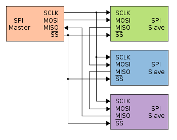
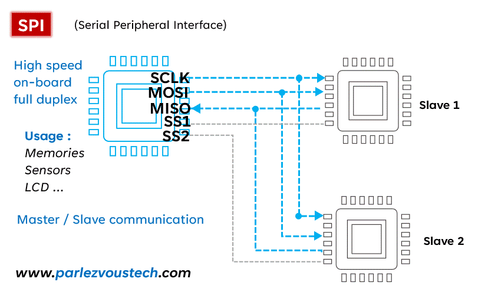
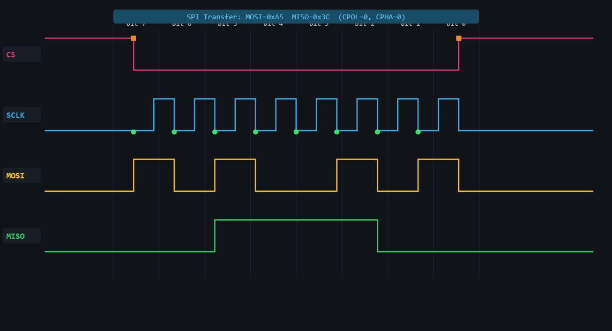

SPI Communication – Complete Professional Tutorial
A professional embedded-systems tutorial page styled to match your I2C HTML design, using the SPI README content as the source.
📌 Introduction
Serial Peripheral Interface (SPI) is a synchronous serial communication protocol widely used for high-speed short-distance communication between microcontrollers and peripherals like displays, ADCs, DACs, sensors, Flash memories, RTCs, and RF modules.
Unlike I2C, SPI does not use device addresses on the bus. Instead, the master selects a slave using a dedicated CS / SS (Chip Select / Slave Select) line.
🧠 Key Concepts
- Four-wire interface:
- SCLK (Serial Clock)
- MOSI (Master Out, Slave In)
- MISO (Master In, Slave Out)
- CS / SS (Chip Select / Slave Select)
- Master-Slave architecture
- Full-duplex communication
- High-speed synchronous transfer
- Clock polarity and phase configurable
- Chip-select-based communication
🌐 SPI Communication Simulator Link
🔌 Basic SPI Connection Diagram

🎞️ SPI Working Animation (GIF)

⚙️ How SPI Works (Step-by-Step)
1. Chip Select Assertion
- Master pulls CS LOW to select a slave device
2. Clock Generation
- Master generates SCLK
- Slave uses this clock to shift data in and out
3. Simultaneous Data Transfer
- Master transmits data on MOSI
- Slave transmits data on MISO
- Data transfer is usually full-duplex
4. Command / Address / Data Phase
- Many SPI devices expect:
- command byte
- register or memory address
- optional dummy byte(s)
- data bytes
5. Chip Select Deassertion
- Master releases CS HIGH
- Transaction ends
📦 Data Format
| CS LOW | COMMAND | ADDRESS (optional) | DUMMY (optional) | DATA | CS HIGH |
Important: SPI frame format is device-specific. Some devices use only raw bytes, while others require command + address + dummy + data.
🔢 SPI Modes (CPOL and CPHA)
SPI supports 4 standard modes based on:
- CPOL = Clock Polarity
- CPHA = Clock Phase
Mode 0
- CPOL = 0
- CPHA = 0
- Clock idle LOW
- Data sampled on rising edge
Mode 1
- CPOL = 0
- CPHA = 1
- Clock idle LOW
- Data sampled on falling edge
Mode 2
- CPOL = 1
- CPHA = 0
- Clock idle HIGH
- Data sampled on falling edge
Mode 3
- CPOL = 1
- CPHA = 1
- Clock idle HIGH
- Data sampled on rising edge
🔢 8-bit vs 16-bit Register Addressing
Many SPI devices internally use registers or memory locations.
8-bit Register Addressing
- Common in sensors and simple peripherals
- One register byte sent after command
16-bit Register Addressing
- Common in Flash memories, displays, and large memory devices
- Two address bytes are sent:
- high byte first
- low byte second
📥 8-bit vs 16-bit Data
8-bit Data
- One byte transferred
16-bit Data
- Two bytes transferred
- Usually MSB first unless the device datasheet says otherwise
🔁 Read & Write Flow
📝 Write Operation
- Pull CS LOW
- Send write command
- Send register / memory address
- Send data byte(s)
- Pull CS HIGH
📖 Read Operation
- Pull CS LOW
- Send read command
- Send register / memory address
- Send dummy byte(s) if required
- Read returned byte(s)
- Pull CS HIGH
🧩 ESP-IDF SPI Examples
The examples below cover common SPI use cases:
- command-only transfer
- full-duplex single-byte transfer
- 8-bit register + 8-bit data
- 8-bit register + 16-bit data
- 16-bit register + 8-bit data
- 16-bit register + 16-bit data
- single-byte read/write
- multi-byte read/write
ESP-IDF Setup
#include "driver/spi_master.h"
#include "esp_err.h"
#include <string.h>
#define SPI_HOST_USED SPI2_HOST
#define PIN_NUM_MOSI 23
#define PIN_NUM_MISO 19
#define PIN_NUM_CLK 18
#define PIN_NUM_CS 5
static spi_device_handle_t spi_dev;
static esp_err_t spi_master_init(void)
{
spi_bus_config_t buscfg = {
.mosi_io_num = PIN_NUM_MOSI,
.miso_io_num = PIN_NUM_MISO,
.sclk_io_num = PIN_NUM_CLK,
.quadwp_io_num = -1,
.quadhd_io_num = -1,
.max_transfer_sz = 256,
};
spi_device_interface_config_t devcfg = {
.clock_speed_hz = 1 * 1000 * 1000,
.mode = 0,
.spics_io_num = PIN_NUM_CS,
.queue_size = 4,
};
ESP_ERROR_CHECK(spi_bus_initialize(SPI_HOST_USED, &buscfg, SPI_DMA_CH_AUTO));
return spi_bus_add_device(SPI_HOST_USED, &devcfg, &spi_dev);
}
1) Write Command Only
esp_err_t spi_write_command(uint8_t cmd)
{
spi_transaction_t t;
memset(&t, 0, sizeof(t));
t.length = 8;
t.tx_buffer = &cmd;
return spi_device_transmit(spi_dev, &t);
}
2) Full-Duplex Single-Byte Transfer
esp_err_t spi_transfer_byte(uint8_t tx_data, uint8_t *rx_data)
{
if (rx_data == NULL) return ESP_ERR_INVALID_ARG;
spi_transaction_t t;
memset(&t, 0, sizeof(t));
t.length = 8;
t.tx_buffer = &tx_data;
t.rx_buffer = rx_data;
return spi_device_transmit(spi_dev, &t);
}
3) Write 8-bit Data to 8-bit Register Address
esp_err_t spi_write_reg8_data8(uint8_t cmd, uint8_t reg_addr, uint8_t data)
{
uint8_t tx[3] = { cmd, reg_addr, data };
spi_transaction_t t;
memset(&t, 0, sizeof(t));
t.length = 8 * sizeof(tx);
t.tx_buffer = tx;
return spi_device_transmit(spi_dev, &t);
}
4) Read 8-bit Data from 8-bit Register Address
esp_err_t spi_read_reg8_data8(uint8_t cmd, uint8_t reg_addr, uint8_t *data)
{
if (data == NULL) return ESP_ERR_INVALID_ARG;
uint8_t tx[3] = { cmd, reg_addr, 0x00 };
uint8_t rx[3] = { 0 };
spi_transaction_t t;
memset(&t, 0, sizeof(t));
t.length = 8 * sizeof(tx);
t.tx_buffer = tx;
t.rx_buffer = rx;
esp_err_t ret = spi_device_transmit(spi_dev, &t);
if (ret == ESP_OK) {
*data = rx[2];
}
return ret;
}
5) Write 16-bit Data to 8-bit Register Address
esp_err_t spi_write_reg8_data16(uint8_t cmd, uint8_t reg_addr, uint16_t data)
{
uint8_t tx[4];
tx[0] = cmd;
tx[1] = reg_addr;
tx[2] = (uint8_t)(data >> 8);
tx[3] = (uint8_t)(data & 0xFF);
spi_transaction_t t;
memset(&t, 0, sizeof(t));
t.length = 8 * sizeof(tx);
t.tx_buffer = tx;
return spi_device_transmit(spi_dev, &t);
}
6) Read 16-bit Data from 8-bit Register Address
esp_err_t spi_read_reg8_data16(uint8_t cmd, uint8_t reg_addr, uint16_t *data)
{
if (data == NULL) return ESP_ERR_INVALID_ARG;
uint8_t tx[4] = { cmd, reg_addr, 0x00, 0x00 };
uint8_t rx[4] = { 0 };
spi_transaction_t t;
memset(&t, 0, sizeof(t));
t.length = 8 * sizeof(tx);
t.tx_buffer = tx;
t.rx_buffer = rx;
esp_err_t ret = spi_device_transmit(spi_dev, &t);
if (ret == ESP_OK) {
*data = ((uint16_t)rx[2] << 8) | rx[3];
}
return ret;
}
7) Write 8-bit Data to 16-bit Register Address
esp_err_t spi_write_reg16_data8(uint8_t cmd, uint16_t reg_addr, uint8_t data)
{
uint8_t tx[4];
tx[0] = cmd;
tx[1] = (uint8_t)(reg_addr >> 8);
tx[2] = (uint8_t)(reg_addr & 0xFF);
tx[3] = data;
spi_transaction_t t;
memset(&t, 0, sizeof(t));
t.length = 8 * sizeof(tx);
t.tx_buffer = tx;
return spi_device_transmit(spi_dev, &t);
}
8) Read 8-bit Data from 16-bit Register Address
esp_err_t spi_read_reg16_data8(uint8_t cmd, uint16_t reg_addr, uint8_t *data)
{
if (data == NULL) return ESP_ERR_INVALID_ARG;
uint8_t tx[4] = {
cmd,
(uint8_t)(reg_addr >> 8),
(uint8_t)(reg_addr & 0xFF),
0x00
};
uint8_t rx[4] = { 0 };
spi_transaction_t t;
memset(&t, 0, sizeof(t));
t.length = 8 * sizeof(tx);
t.tx_buffer = tx;
t.rx_buffer = rx;
esp_err_t ret = spi_device_transmit(spi_dev, &t);
if (ret == ESP_OK) {
*data = rx[3];
}
return ret;
}
9) Write 16-bit Data to 16-bit Register Address
esp_err_t spi_write_reg16_data16(uint8_t cmd, uint16_t reg_addr, uint16_t data)
{
uint8_t tx[5];
tx[0] = cmd;
tx[1] = (uint8_t)(reg_addr >> 8);
tx[2] = (uint8_t)(reg_addr & 0xFF);
tx[3] = (uint8_t)(data >> 8);
tx[4] = (uint8_t)(data & 0xFF);
spi_transaction_t t;
memset(&t, 0, sizeof(t));
t.length = 8 * sizeof(tx);
t.tx_buffer = tx;
return spi_device_transmit(spi_dev, &t);
}
10) Read 16-bit Data from 16-bit Register Address
esp_err_t spi_read_reg16_data16(uint8_t cmd, uint16_t reg_addr, uint16_t *data)
{
if (data == NULL) return ESP_ERR_INVALID_ARG;
uint8_t tx[5] = {
cmd,
(uint8_t)(reg_addr >> 8),
(uint8_t)(reg_addr & 0xFF),
0x00,
0x00
};
uint8_t rx[5] = { 0 };
spi_transaction_t t;
memset(&t, 0, sizeof(t));
t.length = 8 * sizeof(tx);
t.tx_buffer = tx;
t.rx_buffer = rx;
esp_err_t ret = spi_device_transmit(spi_dev, &t);
if (ret == ESP_OK) {
*data = ((uint16_t)rx[3] << 8) | rx[4];
}
return ret;
}
11) Multi-Byte Read from 8-bit Register Address
esp_err_t spi_read_reg8_buffer(uint8_t cmd, uint8_t reg_addr, uint8_t *buf, size_t len)
{
if (buf == NULL || len == 0) return ESP_ERR_INVALID_ARG;
uint8_t tx[len + 2];
uint8_t rx[len + 2];
memset(tx, 0, sizeof(tx));
memset(rx, 0, sizeof(rx));
tx[0] = cmd;
tx[1] = reg_addr;
spi_transaction_t t;
memset(&t, 0, sizeof(t));
t.length = 8 * sizeof(tx);
t.tx_buffer = tx;
t.rx_buffer = rx;
esp_err_t ret = spi_device_transmit(spi_dev, &t);
if (ret == ESP_OK) {
memcpy(buf, &rx[2], len);
}
return ret;
}
12) Multi-Byte Write to 16-bit Register Address
esp_err_t spi_write_reg16_buffer(uint8_t cmd, uint16_t reg_addr, const uint8_t *buf, size_t len)
{
if (buf == NULL || len == 0) return ESP_ERR_INVALID_ARG;
uint8_t tx[len + 3];
tx[0] = cmd;
tx[1] = (uint8_t)(reg_addr >> 8);
tx[2] = (uint8_t)(reg_addr & 0xFF);
memcpy(&tx[3], buf, len);
spi_transaction_t t;
memset(&t, 0, sizeof(t));
t.length = 8 * (len + 3);
t.tx_buffer = tx;
return spi_device_transmit(spi_dev, &t);
}
ESP-IDF Example Usage
void app_main(void)
{
ESP_ERROR_CHECK(spi_master_init());
uint8_t value8;
uint16_t value16;
uint8_t buf[4];
spi_write_reg8_data8(0x02, 0x10, 0xAB);
spi_read_reg8_data8(0x03, 0x10, &value8);
spi_write_reg8_data16(0x02, 0x20, 0x1234);
spi_read_reg8_data16(0x03, 0x20, &value16);
spi_write_reg16_data8(0x02, 0x1234, 0x5A);
spi_read_reg16_data8(0x03, 0x1234, &value8);
spi_write_reg16_data16(0x02, 0x1234, 0xBEEF);
spi_read_reg16_data16(0x03, 0x1234, &value16);
spi_read_reg8_buffer(0x03, 0x30, buf, sizeof(buf));
}
🧩 STM32 HAL Examples
STM32 HAL provides simple blocking, interrupt, and DMA SPI APIs. For this tutorial, the examples use polling mode for clarity.
STM32 Setup Assumption
#include "stm32f1xx_hal.h"
extern SPI_HandleTypeDef hspi1;
1) Write Command Only
HAL_StatusTypeDef stm32_spi_write_command(uint8_t cmd)
{
return HAL_SPI_Transmit(&hspi1, &cmd, 1, 100);
}
2) Full-Duplex Single-Byte Transfer
HAL_StatusTypeDef stm32_spi_transfer_byte(uint8_t tx_data, uint8_t *rx_data)
{
return HAL_SPI_TransmitReceive(&hspi1, &tx_data, rx_data, 1, 100);
}
3) Write 8-bit Data to 8-bit Register Address
HAL_StatusTypeDef stm32_spi_write_reg8_data8(uint8_t cmd, uint8_t reg_addr, uint8_t data)
{
uint8_t tx[3] = { cmd, reg_addr, data };
return HAL_SPI_Transmit(&hspi1, tx, 3, 100);
}
4) Read 8-bit Data from 8-bit Register Address
HAL_StatusTypeDef stm32_spi_read_reg8_data8(uint8_t cmd, uint8_t reg_addr, uint8_t *data)
{
uint8_t tx[3] = { cmd, reg_addr, 0x00 };
uint8_t rx[3] = { 0 };
HAL_StatusTypeDef ret = HAL_SPI_TransmitReceive(&hspi1, tx, rx, 3, 100);
if (ret == HAL_OK && data != NULL) {
*data = rx[2];
}
return ret;
}
5) Write 16-bit Data to 8-bit Register Address
HAL_StatusTypeDef stm32_spi_write_reg8_data16(uint8_t cmd, uint8_t reg_addr, uint16_t data)
{
uint8_t tx[4];
tx[0] = cmd;
tx[1] = reg_addr;
tx[2] = (uint8_t)(data >> 8);
tx[3] = (uint8_t)(data & 0xFF);
return HAL_SPI_Transmit(&hspi1, tx, 4, 100);
}
6) Read 16-bit Data from 8-bit Register Address
HAL_StatusTypeDef stm32_spi_read_reg8_data16(uint8_t cmd, uint8_t reg_addr, uint16_t *data)
{
uint8_t tx[4] = { cmd, reg_addr, 0x00, 0x00 };
uint8_t rx[4] = { 0 };
HAL_StatusTypeDef ret = HAL_SPI_TransmitReceive(&hspi1, tx, rx, 4, 100);
if (ret == HAL_OK && data != NULL) {
*data = ((uint16_t)rx[2] << 8) | rx[3];
}
return ret;
}
7) Write 8-bit Data to 16-bit Register Address
HAL_StatusTypeDef stm32_spi_write_reg16_data8(uint8_t cmd, uint16_t reg_addr, uint8_t data)
{
uint8_t tx[4];
tx[0] = cmd;
tx[1] = (uint8_t)(reg_addr >> 8);
tx[2] = (uint8_t)(reg_addr & 0xFF);
tx[3] = data;
return HAL_SPI_Transmit(&hspi1, tx, 4, 100);
}
8) Read 8-bit Data from 16-bit Register Address
HAL_StatusTypeDef stm32_spi_read_reg16_data8(uint8_t cmd, uint16_t reg_addr, uint8_t *data)
{
uint8_t tx[4] = {
cmd,
(uint8_t)(reg_addr >> 8),
(uint8_t)(reg_addr & 0xFF),
0x00
};
uint8_t rx[4] = { 0 };
HAL_StatusTypeDef ret = HAL_SPI_TransmitReceive(&hspi1, tx, rx, 4, 100);
if (ret == HAL_OK && data != NULL) {
*data = rx[3];
}
return ret;
}
9) Write 16-bit Data to 16-bit Register Address
HAL_StatusTypeDef stm32_spi_write_reg16_data16(uint8_t cmd, uint16_t reg_addr, uint16_t data)
{
uint8_t tx[5];
tx[0] = cmd;
tx[1] = (uint8_t)(reg_addr >> 8);
tx[2] = (uint8_t)(reg_addr & 0xFF);
tx[3] = (uint8_t)(data >> 8);
tx[4] = (uint8_t)(data & 0xFF);
return HAL_SPI_Transmit(&hspi1, tx, 5, 100);
}
10) Read 16-bit Data from 16-bit Register Address
HAL_StatusTypeDef stm32_spi_read_reg16_data16(uint8_t cmd, uint16_t reg_addr, uint16_t *data)
{
uint8_t tx[5] = {
cmd,
(uint8_t)(reg_addr >> 8),
(uint8_t)(reg_addr & 0xFF),
0x00,
0x00
};
uint8_t rx[5] = { 0 };
HAL_StatusTypeDef ret = HAL_SPI_TransmitReceive(&hspi1, tx, rx, 5, 100);
if (ret == HAL_OK && data != NULL) {
*data = ((uint16_t)rx[3] << 8) | rx[4];
}
return ret;
}
11) Write Multiple Bytes to 8-bit Register Address
HAL_StatusTypeDef stm32_spi_write_reg8_buffer(uint8_t cmd, uint8_t reg_addr,
uint8_t *buf, uint16_t len)
{
uint8_t tx[len + 2];
tx[0] = cmd;
tx[1] = reg_addr;
memcpy(&tx[2], buf, len);
return HAL_SPI_Transmit(&hspi1, tx, len + 2, 100);
}
12) Read Multiple Bytes from 16-bit Register Address
HAL_StatusTypeDef stm32_spi_read_reg16_buffer(uint8_t cmd, uint16_t reg_addr,
uint8_t *buf, uint16_t len)
{
uint8_t tx[len + 3];
uint8_t rx[len + 3];
memset(tx, 0, sizeof(tx));
memset(rx, 0, sizeof(rx));
tx[0] = cmd;
tx[1] = (uint8_t)(reg_addr >> 8);
tx[2] = (uint8_t)(reg_addr & 0xFF);
HAL_StatusTypeDef ret = HAL_SPI_TransmitReceive(&hspi1, tx, rx, len + 3, 100);
if (ret == HAL_OK && buf != NULL) {
memcpy(buf, &rx[3], len);
}
return ret;
}
STM32 Example Usage
void example_spi_transactions(void)
{
uint8_t value8;
uint16_t value16;
uint8_t buf[4];
stm32_spi_write_reg8_data8(0x02, 0x10, 0xAA);
stm32_spi_read_reg8_data8(0x03, 0x10, &value8);
stm32_spi_write_reg8_data16(0x02, 0x20, 0x1122);
stm32_spi_read_reg8_data16(0x03, 0x20, &value16);
stm32_spi_write_reg16_data8(0x02, 0x1234, 0x77);
stm32_spi_read_reg16_data8(0x03, 0x1234, &value8);
stm32_spi_write_reg16_data16(0x02, 0x1234, 0x3344);
stm32_spi_read_reg16_data16(0x03, 0x1234, &value16);
stm32_spi_read_reg16_buffer(0x03, 0x2000, buf, sizeof(buf));
}
⚡ Important Notes
- SPI usually needs one CS line per slave
- SPI is generally faster than I2C
- No pull-up resistors required like I2C
- Master always generates the clock
- Some devices require dummy clocks / dummy bytes before read data becomes valid
- Some devices support MSB-first or LSB-first
- Always match:
- SPI mode
- clock speed
- bit order
- frame format
🛠️ Troubleshooting
- No response -> Check CS wiring and SPI mode
- Wrong data -> Check CPOL / CPHA settings
- All zeros / all 0xFF -> Check MISO connection and dummy bytes
- Data shifted incorrectly -> Check bit order and clock edge
- Works sometimes -> Reduce SPI clock speed and verify signal quality
🔬 How MCU Handles 8-bit and 16-bit Address/Data Internally
8-bit Register Address
When a device uses an 8-bit register address, the MCU typically sends:
CS LOW
COMMAND
REG_ADDR (8-bit)
DATA...
CS HIGH
16-bit Register Address
When a device uses a 16-bit register or memory address, the MCU typically sends:
CS LOW
COMMAND
REG_ADDR_HIGH
REG_ADDR_LOW
DATA...
CS HIGH
8-bit Data
For 8-bit data, only one byte is transferred:
DATA = 0x5A
16-bit Data
For 16-bit data, two bytes are transferred, usually MSB first:
DATA_HIGH = 0x12
DATA_LOW = 0x34
Combined value:
0x1234
Important Rule
Register/address width and data width are different things.
Examples:
- sensor may use 8-bit register address and 8-bit data
- Flash memory may use 16-bit or 24-bit address and 8-bit data
- ADC may use 8-bit register address and return 16-bit data
- display controller may use command + data stream without a normal register map
So always check the datasheet for:
- command format
- register / memory address size
- data size
- byte order
- dummy cycles
- SPI mode
📚 Summary
- SPI uses clocked serial communication
- Usually 4 wires: SCLK, MOSI, MISO, CS
- Full-duplex transfer is possible
- Faster than I2C in many applications
- Each slave usually needs its own CS line
- Frame format depends on the device datasheet
🚀 Bonus: Logic Analyzer View

📌 References
- ESP-IDF SPI Master Driver: https://docs.espressif.com/projects/esp-idf/en/stable/esp32/api-reference/peripherals/spi_master.html
- STM32 HAL SPI How To Use: https://dev.st.com/stm32cube-docs/stm32c5xx-hal-drivers/2.0.0/en/docs/drivers/hal_drivers/spi/hal_spi_how_to_use.html